整理收集一些
# 显示 CPU 的详细信息（这里也会包括CPU架构信息）
lscpu
# CPU架构（是 amd 还是 arm）
# 更多请参考：https://zh.wikipedia.org/zh-cn/指令集架构
dpkg --print-architecture
# 系统监视器
gnome-system-monitor
# 查看内存占用
free -h -w
# 重启
reboot
# 立即关机
sudo shutdown now
# 创建文件夹
mkdir demo1
# 删除文件或者文件夹
sudo rm -rf demo1
# 端口占用
sudo lsof -i :8888
# 密码和密钥（密钥环）
seahorse
你可以参考：Hyper-V - xiaodu114.github.io
如果你想修改一个比较简单的密码，你需要修改密码策略
# 1、修改文件权限
sudo chmod 777 /etc/security/pwquality.conf
# 用完之后，对所有用户移除写权限
sudo chmod a-w /etc/security/pwquality.conf
# 2、修改文件
# 密码的最小长度（最小6位。你就算设置为 1 ，也不起作用）
minlen = 1
# 至少包含几种不同的字符类型（0表示不需要）
minclass = 0
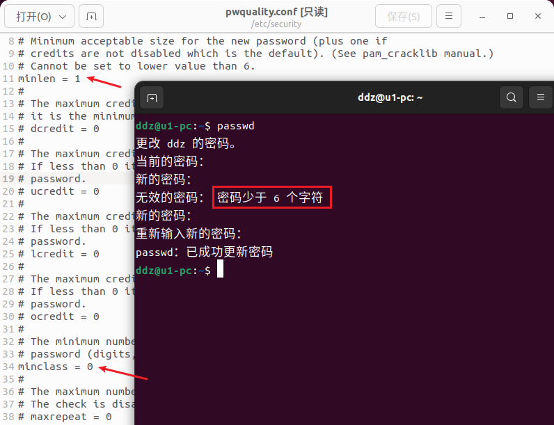
1、点击“软件和更新”图标
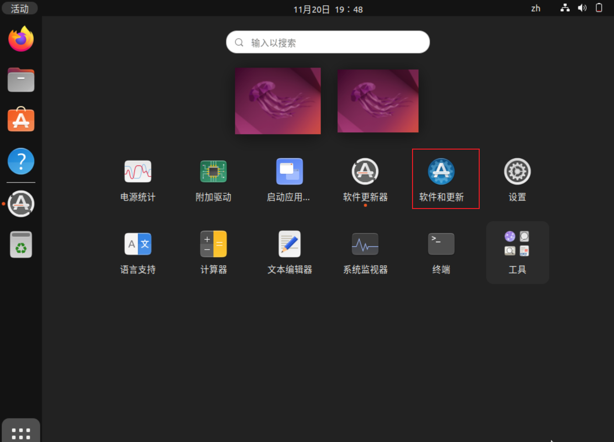
2、点击“下载自”下拉框并选择“其他”
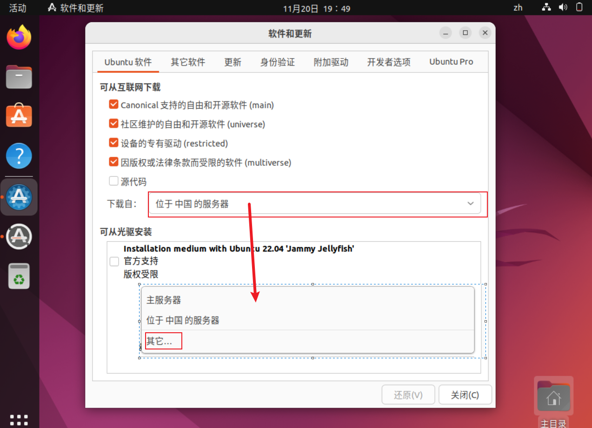
3、选择最佳服务器
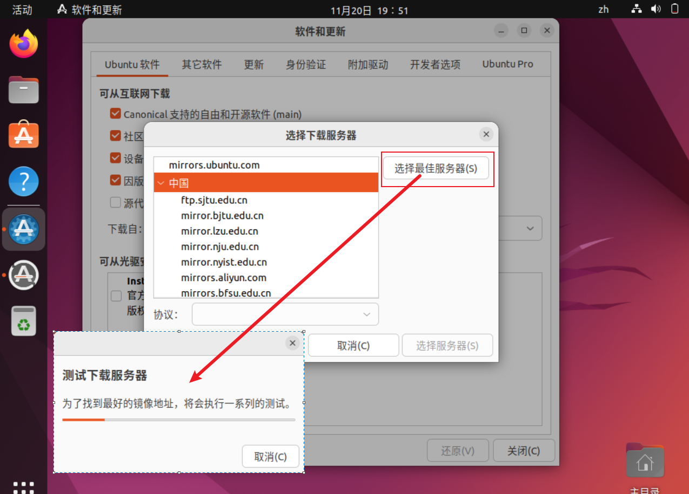
你会看到这里有很多内置的中国服务器，“选择最佳服务器”测试哪个最适合你。
4、认证
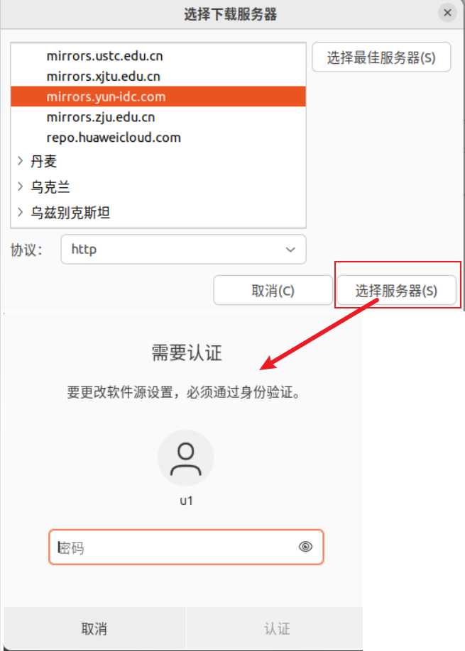
测出最佳之后，点击“选择服务器”时会有认证提示框。
5、重新载入软件的列表信息
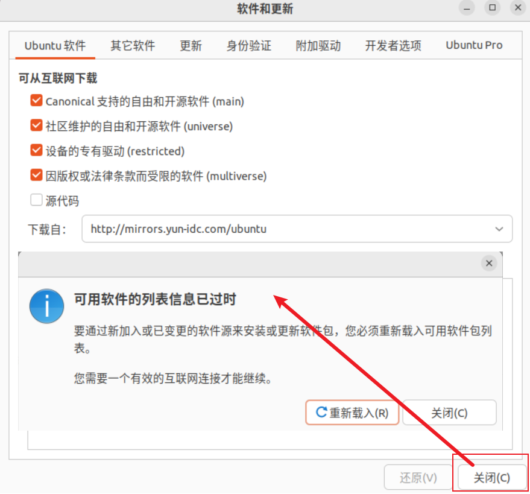
# 方式1
hostname -I
# 方式2
ip addr show eth0
# 方式3
nmcli -p device show
这玩意也是够让人郁闷的……
# 查看帮助
sudo ufw -h
sudo ufw status
sudo ufw enable
sudo ufw disable
他还有一个图形化的客户端：gufw，你可以这样安装
# 开机启动
sudo systemctl enable firewalld
# 查看状态
sudo systemctl status firewalld
# 启动服务
sudo systemctl start firewalld
# 停止服务
sudo systemctl stop firewalld
# 停止服务
sudo systemctl restart firewalld
他还有一个图形化的客户端：firewall-config，你可以这样安装
下载地址：下载 Microsoft Edge
# 这里下载的是：microsoft-edge-stable_120.0.2210.61-1_amd64.deb
# 在上面下载文件的文件夹进入终端，执行下面的命令
sudo dpkg -i microsoft-edge-stable_120.0.2210.61-1_amd64.deb
下载地址：Download Visual Studio Code - Mac, Linux, Windows
# 这里下载的是：code_1.85.0-1701902998_amd64.deb
# 和Edge一样
sudo dpkg -i code_1.85.0-1701902998_amd64.deb
先说一下如何卸载软件包
sudo apt remove --purge xxx
sudo apt purge xxx
sudo apt autoremove
sudo apt autoclean
sudo apt update
# 检查 Git 版本：git --version
sudo apt install git git-lfs
已经默认安装了
# 检查 Python 版本
python3 -V
# 检查 pip 版本：pip -V
sudo apt install python3-pip
# 临时使用清华镜像来升级 pip
python3 -m pip install -i https://pypi.tuna.tsinghua.edu.cn/simple --upgrade pip
# 全局设置
pip config set global.index-url https://pypi.tuna.tsinghua.edu.cn/simple
sudo apt install python3-venv
# 创建
python3 -m venv venv
# 激活
source ./venv/bin/activate
# 退出虚拟环境
deactivate
# 安装依赖（添加到这里，使用的时候方便一些）
pip install -r requirements.txt
# 你可以创建多个虚拟环境
python3 -m venv venv1
source ./venv1/bin/activate
python3 -m venv venv2
source ./venv2/bin/activate
直接使用 apt 安装，默认安装的版本太老了，需要先设置一下安装源。更多请看：Nodesource Node.js DEB
# 20.x 是你想要安装的版本
curl -fsSL https://deb.nodesource.com/setup_20.x | sudo bash -
# 之后安装即可
sudo apt install -y nodejs
顺带记一下，如何设置镜像源：
npm config get registry
# registry.npm.taobao.org 的 HTTPS 证书到期
npm config set registry https://registry.npm.taobao.org
# 2024-02-22 更新
# 请使用最新（下方）的 npmjs.com 镜像，官网：https://npmmirror.com/
npm config set registry https://registry.npmmirror.com
官网：Node.js | Node.js — Download
这里下载的是（2024-01-30）
# 在解压之后的文件夹所在目录（这里是桌面）打开终端
# 1、移动到你想安装的目录（这里是 /usr/local/bin）
sudo mv node-v20.11.0-linux-x64 /usr/local/bin/node-v20.11.0
# 2、添加环境变量
# 2.1、修改 /etc/profile 文件权限
sudo chmod 777 /etc/profile
# 2.2、编辑 /etc/profile 文件，在末尾添加如下内容
export NODE_HOME=/usr/local/bin/node-v20.11.0
export PATH=$NODE_HOME/bin:$PATH
# 2.3、环境变量立即生效
source /etc/profile
# 3、版本检测
node -v
npm -v
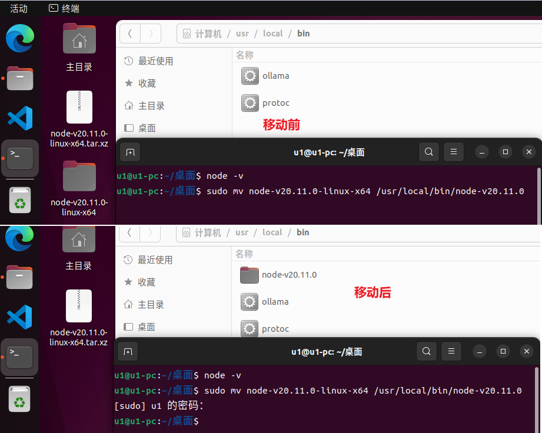
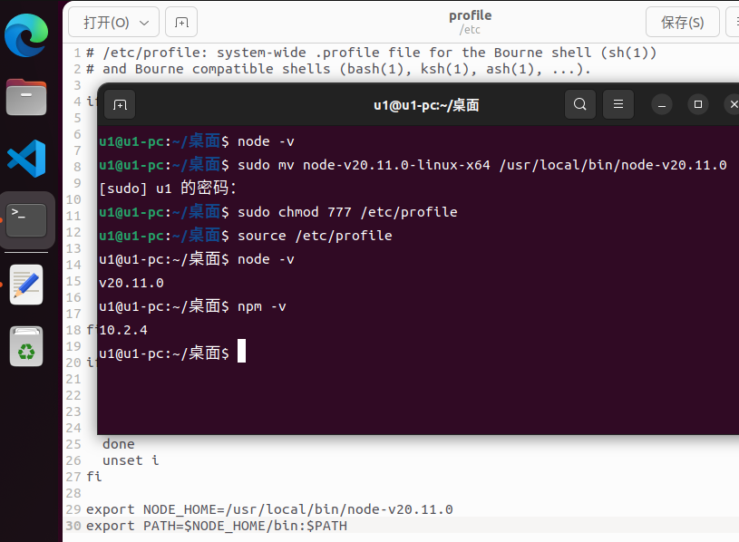
CUDA Toolkit 和 cuDNN 大语言模型必备，请参考：WSL2 - xiaodu114.github.io
ubuntu 服务器遇到了几次 nvidia 驱动自动更新的情况，导致某些程序或者查看GPU占用无法正常使用。因此想着将自动更新禁掉，如下：
# 1、显卡驱动版本号，下面两个都可以
apt list --installed | grep nvidia-driver
dpkg -l | grep -i nvidia-driver
# 2、锁定（经过上面的查找，这里是 535）
sudo apt-mark hold nvidia-driver-535
# 3、解除锁定
sudo apt-mark unhold nvidia-driver-535
一些GNOME相关的东东……弄得多了，也发现了一些问题：“设置”中没有“外观”配置；桌面没有显示 Dock；窗口没有最大化、最小化按钮等等
为啥有的安装之后“设置”中没有“外观”这个菜单……
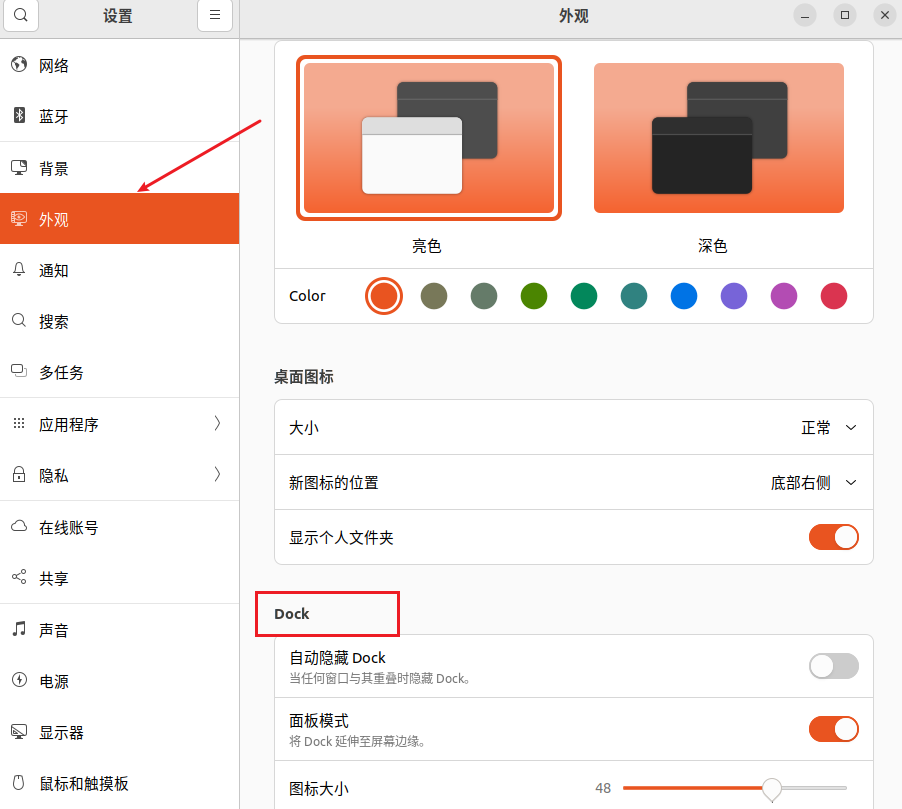
扩展管理器感觉和下面的“扩展”类似，只不过扩展管理器有搜索扩展的功能，感觉像个市场
sudo apt install gnome-shell-extension-manager
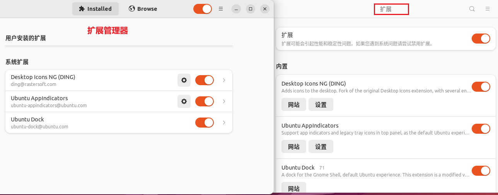
通用上面的插件，我们可以控制“Ubuntu Dock”的开启和关闭。之后你可以通过下面的命令控制“Ubuntu Dock”的位置和高度等
# Dock 的位置，BOTTOM 屏幕底部 ； LEFT 屏幕左边
gsettings set org.gnome.shell.extensions.dash-to-dock dock-position BOTTOM
# Dock 的高度（位于左边）或者宽度（位于底部），true 撑满屏幕的宽度或者高度 ； false 不撑满（居中显示）
gsettings set org.gnome.shell.extensions.dash-to-dock extend-height false
参考：桌面应用|如何在 Ubuntu 20.04 上禁用坞站（dock）
sudo apt install gnome-shell-extensions
sudo apt install gnome-tweaks
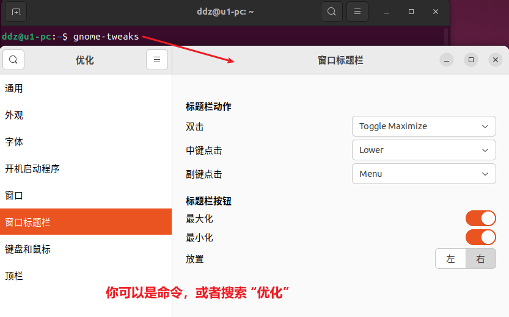
扩展介绍：Adds icons to the desktop. Fork of the original Desktop Icons extension, with several enhancements .
# 参考：https://www.sysgeek.cn/ubuntu-hide-home-icon/
# 显示
gsettings set org.gnome.shell.extensions.ding show-home true
# 隐藏
gsettings set org.gnome.shell.extensions.ding show-home false
# 参考：https://www.sysgeek.cn/show-trash-on-ubuntu-desktop-22-04/
# 显示
gsettings set org.gnome.shell.extensions.ding show-trash true
# 隐藏
gsettings set org.gnome.shell.extensions.ding show-trash false